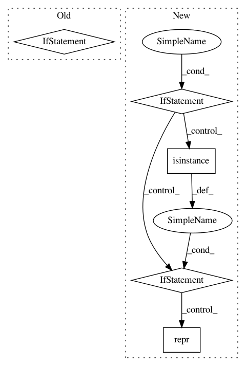

9f9e5fab999fa6e7ab07e5c5561bcd6026060057,sos/sos_step.py,Base_Step_Executor,run,#Base_Step_Executor#,739
Before Change
self.log("_input")
env.sos_dict.set("_index", idx)
//
if "__default_output__" in env.sos_dict and not \
any(st[0] == ":" and st[1] == "output" for st in self.step.statements[input_statement_idx:]):
pre_statement = [[":", "output", "_output"]]
else:
pre_statement = []
for statement in pre_statement + self.step.statements[input_statement_idx:]:
// if input is undertermined, we can only process output:
if isinstance(g, Undetermined) and statement[0] != ":":
return self.collect_result()
After Change
if not any(st[0] == ":" and st[1] == "output" for st in self.step.statements[input_statement_idx:]):
if "__default_output__" in env.sos_dict:
pre_statement = [[":", "output", "_output"]]
elif "provides" in self.step.options:
if isinstance(self.step.options["provides"], str):
pre_statement = [[":", "output", repr(self.step.options["provides"])]]
else:
pre_statement = [[":", "output", repr([x for x in self.step.options["provides"] if isinstance(x, str)])]]
for statement in pre_statement + self.step.statements[input_statement_idx:]:
// if input is undertermined, we can only process output:
if isinstance(g, Undetermined) and statement[0] != ":":
return self.collect_result()
In pattern: SUPERPATTERN
Frequency: 4
Non-data size: 5
Instances
Project Name: vatlab/SoS
Commit Name: 9f9e5fab999fa6e7ab07e5c5561bcd6026060057
Time: 2017-02-11
Author: ben.bog@gmail.com
File Name: sos/sos_step.py
Class Name: Base_Step_Executor
Method Name: run
Project Name: vatlab/SoS
Commit Name: e705c826e5d661f0f1545b9f0cda152b80415c2b
Time: 2017-06-26
Author: ben.bog@gmail.com
File Name: src/sos/target.py
Class Name: remote
Method Name: name
Project Name: probcomp/bayeslite
Commit Name: 70c05f0a9c2e13f1864a96eb3b637dafd4d16be5
Time: 2015-02-25
Author: riastradh+probcomp@csail.mit.edu
File Name: src/codebook.py
Class Name:
Method Name: bayesdb_import_codebook_csv_file
Project Name: dask/distributed
Commit Name: 888675a2451f0908f2eb18a07ae48a42a9f4fe0d
Time: 2019-10-25
Author: jcrist@users.noreply.github.com
File Name: distributed/security.py
Class Name: Security
Method Name: __repr__